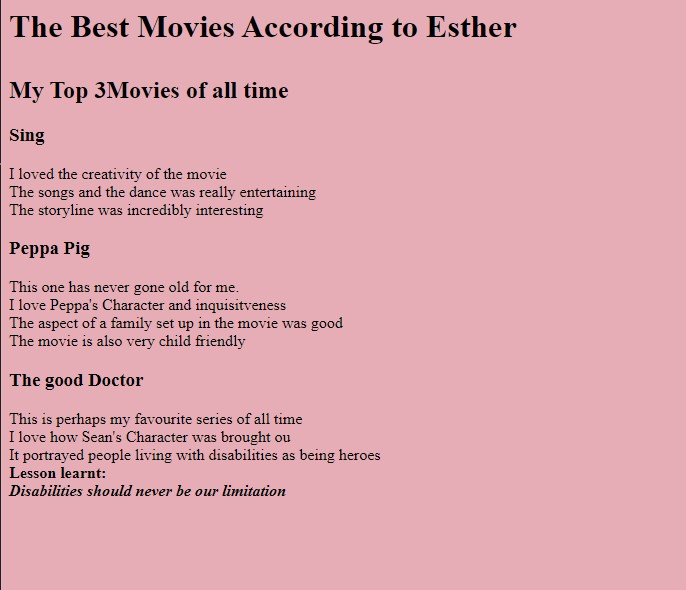
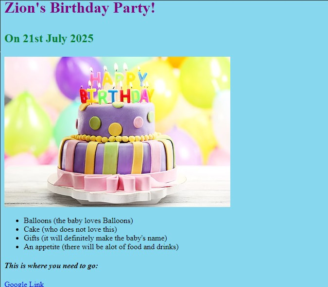

Esther K's website
I am a web developer
movie-ranking

The Best Movies According to Esther
My top 3 Movies of all time:
Sing
I loved the creativity of the movie
Peppa Pig
This one has never gone old for me.
The good Doctor
This is perhaps my favourite series of all time.
birthday-invite

Zion's Birthday Invite
On 21st July
What to bring:
- Birthday cake
- Gifts
- An appetite
about contact